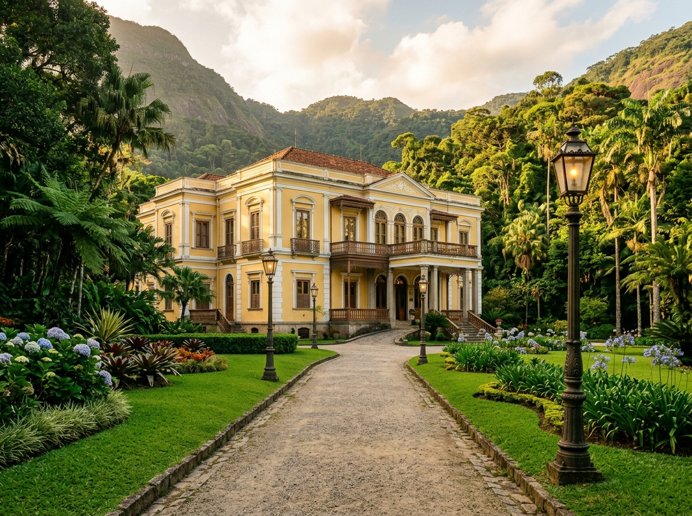
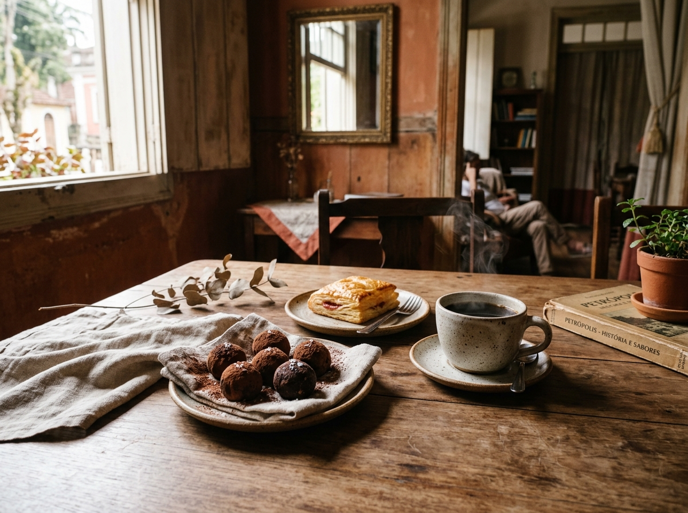
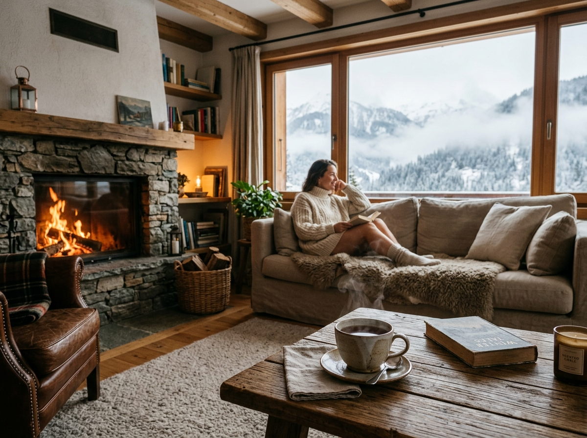
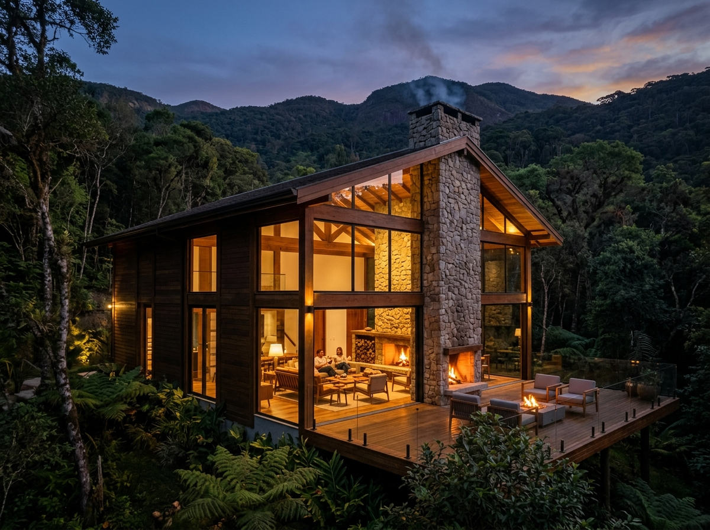
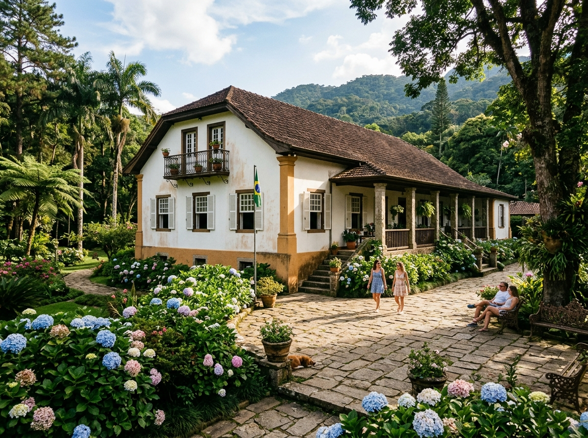
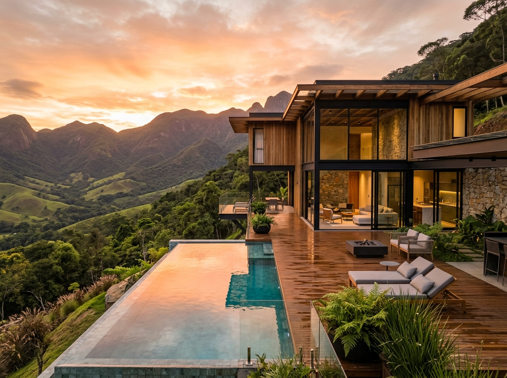
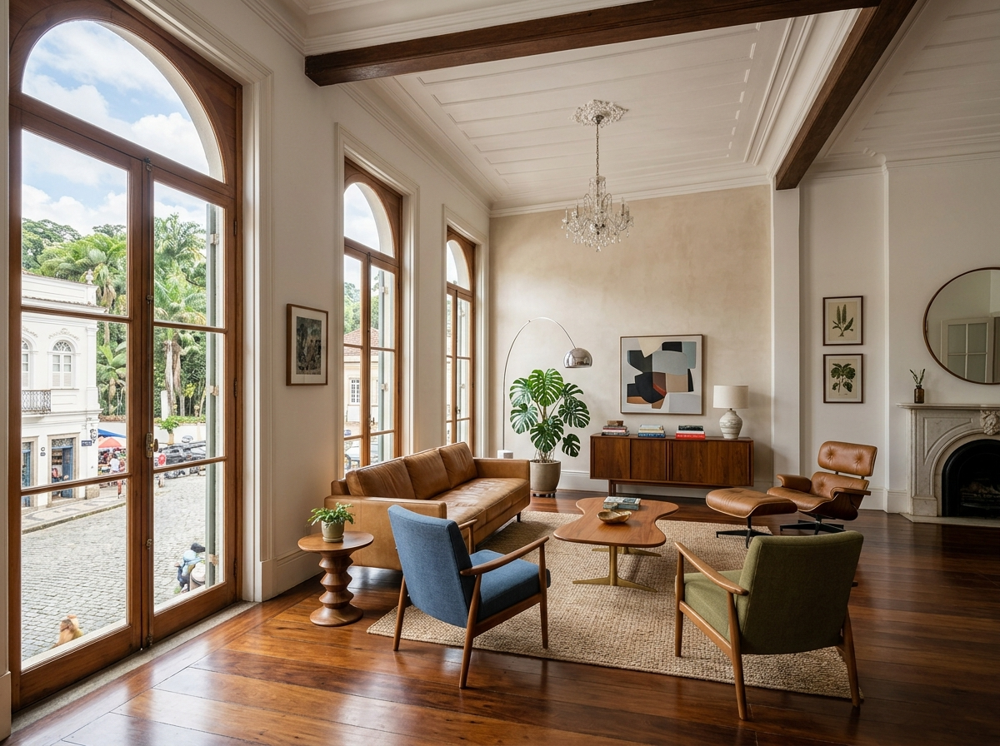

Como é viver em Petrópolis no inverno: clima, lareiras e a rotina do frio
Um olhar sincero sobre a temperatura amena, os festivais gastronômicos e os detalhes práticos de manter uma casa de montanha aconchegante nos meses frios.
A ponte entre quem visita, quem investe e quem se apaixona pela serra fluminense. Experiências turísticas autorais e curadoria fina de imóveis de campo com alma e história.

Fundada no Centro Histórico por nativos da serra
"Crescemos vendo Petrópolis esvaziar no inverno e lotar nos fins de semana. Criamos a Vale Imperial para mostrar a cidade de verdade — aquela que pulsa além do óbvio."
Fundada em 2014 pelos sócios petropolitanos Lucas Veiga e Helena Drummond, a Vale Imperial nasceu do desejo de conectar pessoas exigentes ao patrimônio histórico, natural e imobiliário de Petrópolis de forma profunda e respeitosa.
Não somos uma agência de turismo de massa nem uma imobiliária de catálogo genérico. Somos uma casa de curadoria: revelamos caminhos ecológicos preservados, acervos gastronômicos coloniais e selecionamos propriedades extraordinárias — de chalés integrados à mata em Itaipava a solares restaurados do século XIX em Corrêas.
De presença e curadoria exclusiva na serra
Roteiros privativos guiados por historiadores
Em acervos imobiliários selecionados
Vivências exclusivas com transporte privativo, historiadores locais e acessos fechados ao público geral.

Gastronomia & HistóriaUm passeio sensorial pela tradição chocolataria alemã da Rua Teresa, com visita a ateliês artesanais e café coloniais históricos.
Ver detalhes do roteiroAscensão guiada pelos picos de granito e florestas de araucárias para contemplar o nascer do sol acima do mar de nuvens.
Ver detalhes do roteiroAcesso exclusivo a salas reservadas do Museu Imperial, Palácio de Cristal e jardins projetados pelo paisagista Glaziou.
Ver detalhes do roteiro
Lifestyle & VinhosJantar harmonizado preparado por chefs residentes em adegas históricas de Itaipava, com fogo de chão e jazz ao vivo.
Ver detalhes do roteiro
Itaipava"Arquitetura em vidro e madeira de demolição integrada à vegetação nativa com lareira central de pedra."

Corrêas"Casarão colonial do século XIX restaurado com alpendre em pedras nativas e jardim de hortênsias centenárias."

Nogueira"Propriedade de alto padrão em condomínio fechado com heliponto homologado e vista panorâmica para o vale."

Centro Histórico"Apartamento em edifício histórico tombado, assoalho de peroba-rosa e varanda com vista para as palmeiras imperiais."
"Projeto contemporâneo que otimiza o sol de inverno e oferece silêncio absoluto no coração do vale de Araras."
"Gleba exclusiva com nascente própria e topografia suave ideal para vinhedo boutique ou chalé orgânico."
Não vendemos metros quadrados. Estudamos a acústica do vale, a orientação do sol de inverno e a história de cada imóvel para garantir decisões conscientes.
Acesso exclusivo a propriedades históricas e sítios em Itaipava que não são anunciados publicamente em portais imobiliários tradicionais.
Do primeiro fim de semana à contratação de fornecedores locais confiáveis, acompanhamos o novo morador para que ele viva o melhor da serra desde o primeiro dia.
Ensaios sobre lifestyle de montanha, história local e o mercado de imóveis em Petrópolis.
Um olhar sincero sobre a temperatura amena, os festivais gastronômicos e os detalhes práticos de manter uma casa de montanha aconchegante nos meses frios.
Guia essencial sobre tombamento pelo IPHAN, preservação de assoalhos nobres e a valorização patrimonial de solares do século XIX.
Descubra os cafés escondidos nas vielas imperiais, livrarias antigas e os melhores mirantes para ver o por do sol na serra fluminense.
A Vale Imperial não nos vendeu apenas uma casa em Corrêas. O Lucas e a Helena nos apresentaram à vizinhança, aos produtores orgânicos do vale e nos ensinaram a desfrutar da serra com a calma que procurávamos saindo do Rio.
Estamos situados no coração do Centro Histórico de Petrópolis. Agende um café em nosso escritório ou solicite atendimento privativo.
Rua do Imperador, 355 — Centro Histórico
Petrópolis - RJ, CEP 25620-000